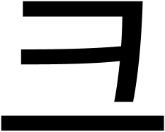
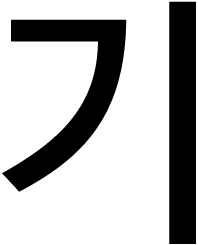
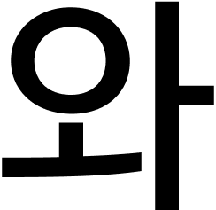
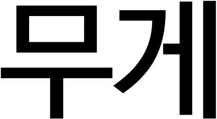

(1)
(1) 크기
(2) 무게
Size Hierarchy
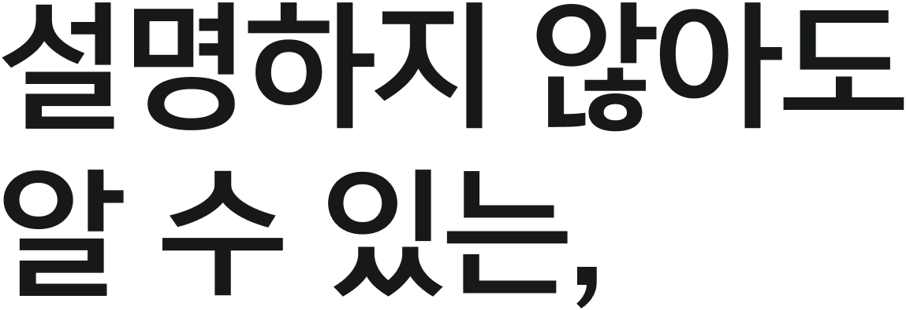
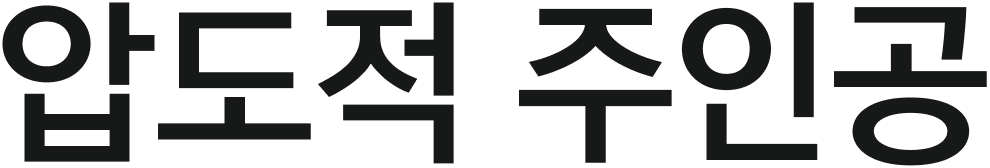
서체 크기 고찰
압도적인 크기는 메시지에 권위를 부여하며 시선의 시작점을 강제로 고정함.
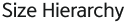
글자의 크기는 시선이 정보를 흡수하는 순서를 결정하며, 시각적 중요도를 뜻합니다.
글자의 크기는 시선이 정보를 흡수하는
순서를 정하며, 단순히 물리적 높낮이만
을 의미하는 것이 아니라 시각적
순서를 정하며, 단순히 물리적 높낮이만
을 의미하는 것이 아니라 시각적
무게이기도 하다. 같은 크기라도 서체마다
시각적 밀도가 달리 느껴지는 건 글자의 비
율과 골격의 차이 때문이다
시각적 밀도가 달리 느껴지는 건 글자의 비
율과 골격의 차이 때문이다
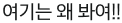
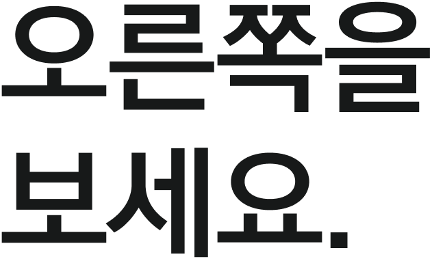
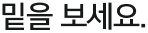
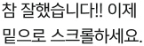
크기 비교
웨이트(Weight)는 텍스트에 물리적인 부피감을 부여하며, 굵은 웨이트는 메시지에 단단한 신뢰감을 실어주고 얇은 웨이트는 공간에 여백을 주어 세련된 인상을 남깁니다. 무게의 적절한 대비는 화면 안에서 시각적 리듬을 만들어내며, 같은 수치의 크기와 무게라도 서체의 골격과 자폭에 따라 전혀 다른 시각적 밀도를 형성하여 정보의 중량감을 재정의합니다.
시선 유도에 대한 기록
주인공이 시선을 뺏으면 디테일은 그 뒤를 따라 조용히 정보를 완성.
60pt
408pt
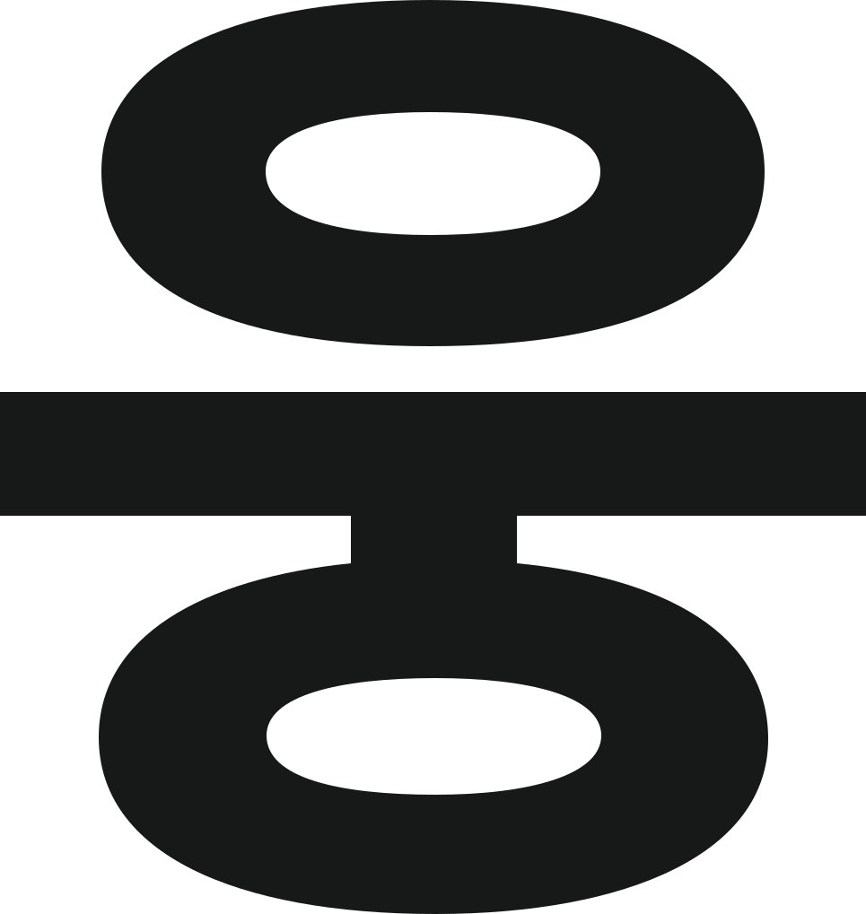
Size Weight
서체의 무게는 시선이 머무는 시간의 차이를
굵기의 대비는 시각적 중량을 조절하여 위계를 형성하며, 이는 단순히 글자의 부피감을 넘어 공간의 질서를 구축하는 핵심입니다.
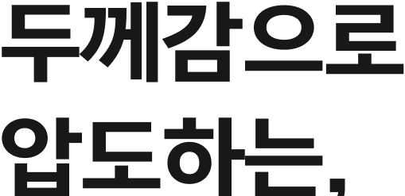
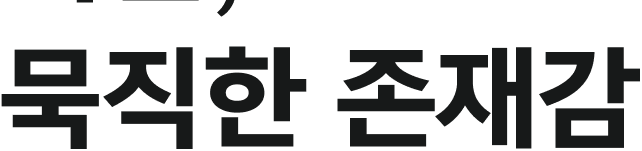
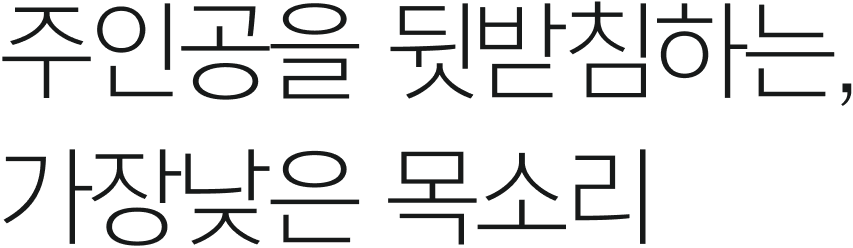
웨이트(Weight)는 텍스트에 물리적인 부피감을 부여하며, 굵은 웨이트는 메시지에 단단한 신뢰감을 실어주고 시각적 중심축.
반면 얇은 웨이트는 공간에 여백을 주어 세련된 인상을 남기며, 정보의 위계를 조절하여 독자의 시선이 편안하게 머물게 함.
무게의 균형
무게(Weight)는 활자에 체온과 밀도를 부여하며, 두꺼운 획은 메시지에 단단한 신뢰감을 실어주고 가는 획은 공간에 여백과 긴장감을 동시에 만들어낸다. 무게의 대비는 화면 안에서 시각적 리듬을 형성하며, 같은 크기와 수치라도 서체의 골격과 자폭에 따라 전혀 다른 밀도와 존재감이 빚어진다. 무게는 단순히 획이 두꺼워지는 것을 훨씬 넘어선다.
Font Weight
웨이트(Weight)는 활자에 질량과 체온을 부여한다.
710
790
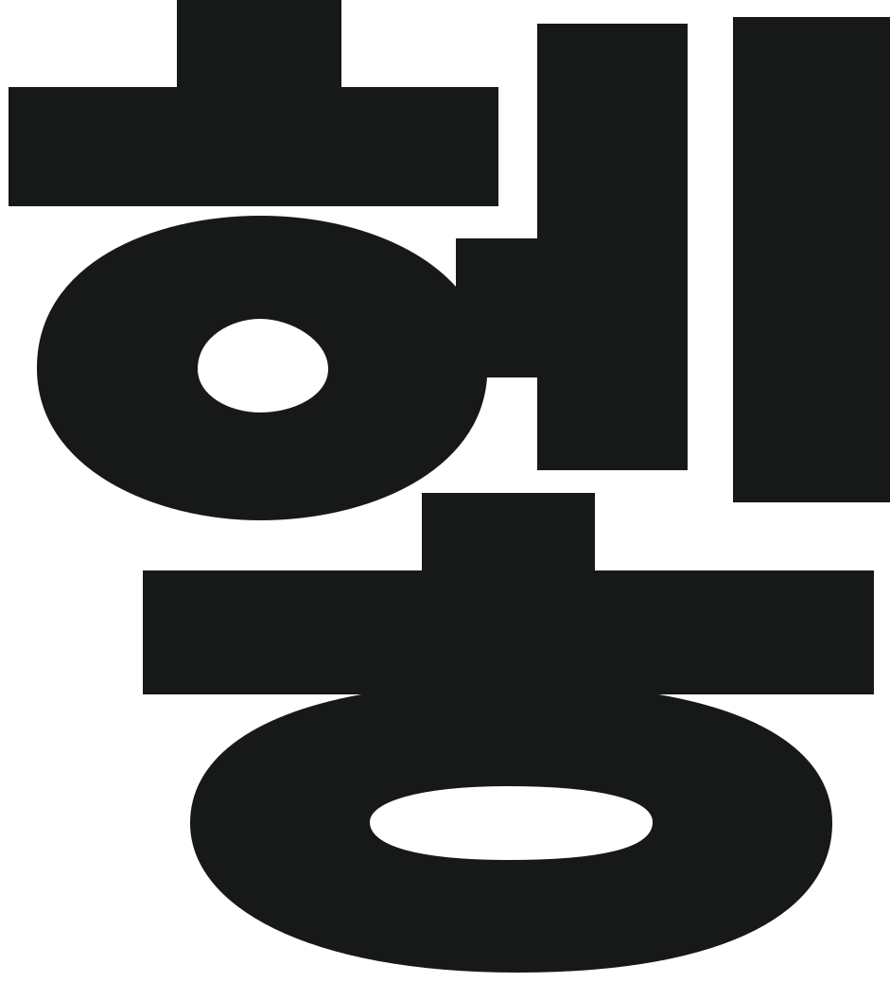
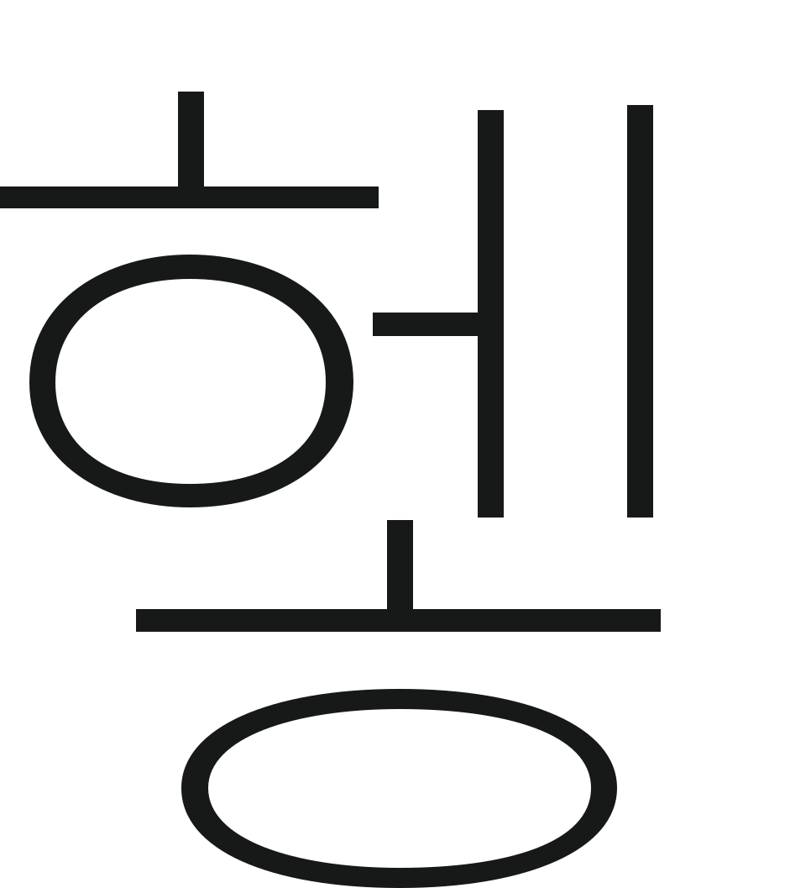
Scale
& Weight
& Weight
크기(Vertical)와 무게(Horizontal)의 조합은 서체가 공간에서 발휘하는 인상의 스펙트럼을 결정한다. 세로축을 따라 크기가 커질수록 조형적 특성이 강해지며, 가로축을 따라 무게가 더해질수록 메시지의 밀도와 중량감이 극대화된다. 아래 매트릭스는 두 서체가 각 조합에서 만들어내는 시각적 온도차를 보여준다. 숫자가 아닌 인상으로 읽어야 한다.
Font Weight
웨이트(Weight)는 활자에 질량과 체온 부여
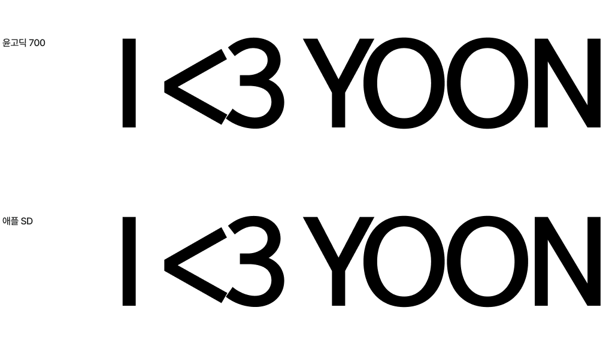
크기 비교
동일 포인트에서 윤고딕 700은 Apple SD Gothic Neo보다 시각적으로 더 크게 느껴진다. 엑스하이트 비율이 높고 자폭이 넓어 같은 크기에서도 존재감이 더 강하다.
무게 비교
윤고딕 700과 Apple SD Gothic Neo Bold는 유사한 시각적 무게를 지니지만, 윤고딕 700의 획은 더 균일하고 구조적이어서 단단한 인상을 남긴다.
Size & Weight
타이포그래피 메시지 표현
크기와 무게 연출을 통한 포스터 제작
화면의 70% 이상을 차지하는 거대한 ‘와삭’ 타이포그래피를 배치하여 시각적 무게감을 확보했습니다. 시각적 그리드에 맞춰 작은 텍스트 뭉텅이들을 빽빽하게 배치하여, 거대한 메인 타이포와 대비되는 3을 연출했습니다.
Gemini Prompt
“High-resolution close-up texture of a ripe red watermelon with black seeds and glistening juice, organic and fresh, vibrant red and dark green contrast, macro photography style, hyper-realistic, 8k resolution.”
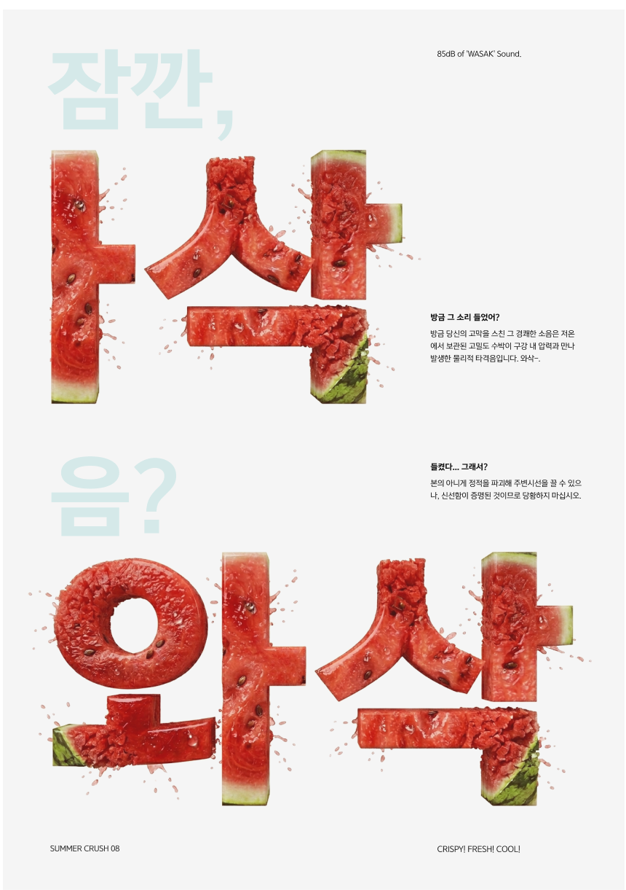